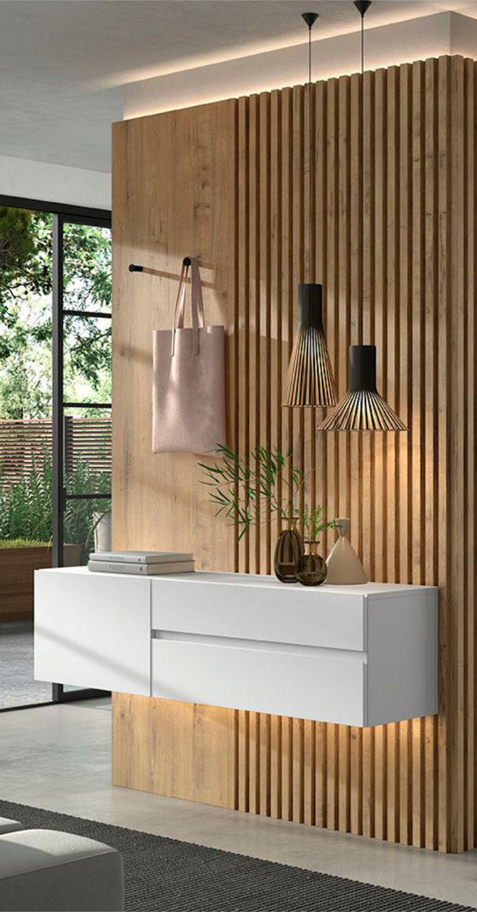
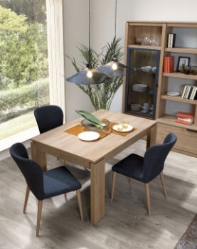
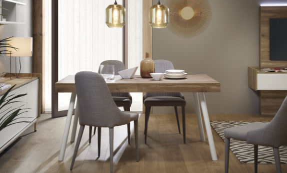
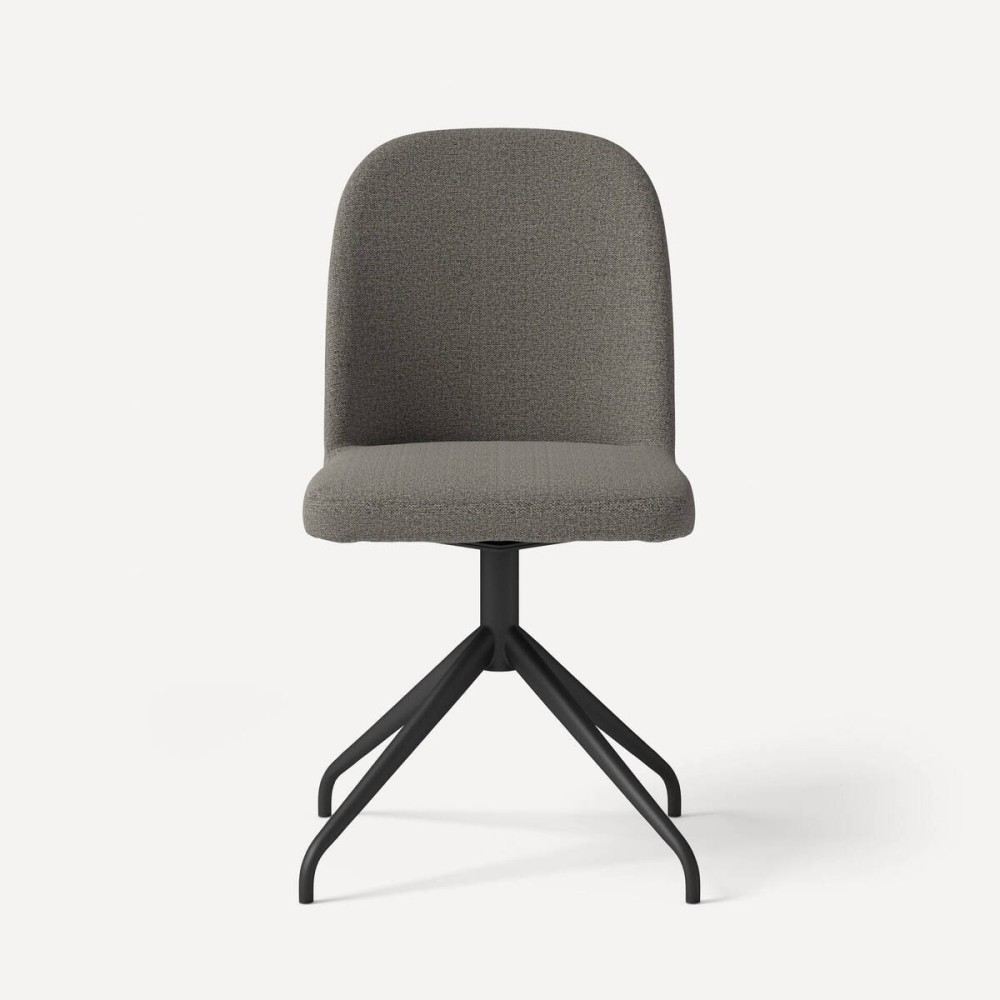

Estanterías, recibidores, consolas, espejos, percheros, sillas y mesas de centro y consola. Los complementos que dan personalidad a cada rincón.

Los muebles auxiliares de Kibuc completan el hogar con la misma calidad de diseño y fabricación que las grandes piezas. Desde el recibidor hasta el rincón del salón, cada complemento está pensado para aportar funcionalidad y belleza.



Ven a Kibuc Vilanova a descubrir los complementos que darán el toque final a tu hogar. Asesoramiento gratuito.